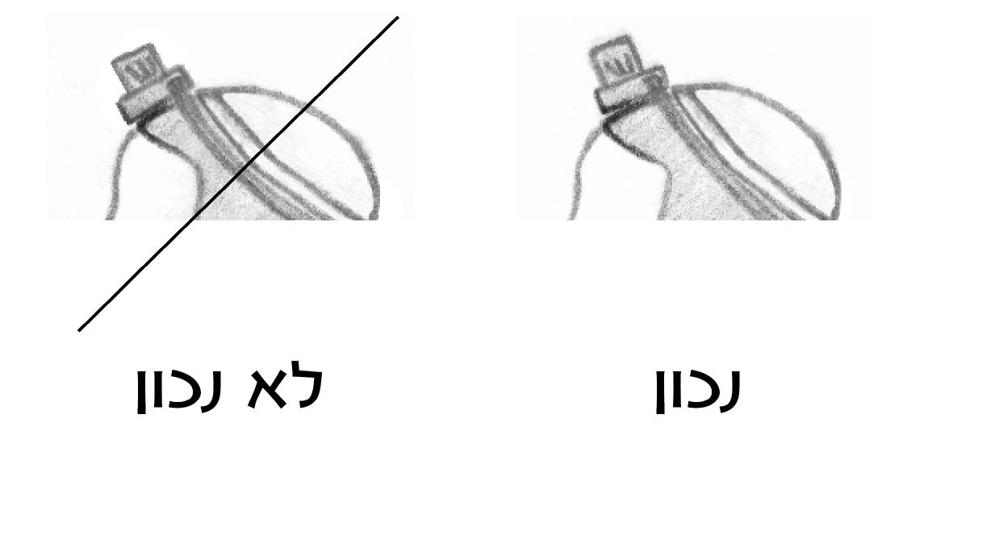

בתפילין ישנן ארבע פרשיות מן התורה, שבכל אחת מהן נזכרה המצווה להניחן על היד ועל הראש. ואלו הן ארבע הפרשיות: 'קדש' (שמות יג, א-י), 'והיה כי יביאך' (שמות יג, יא-טז), 'שמע' (דברים ו, ד-ט), 'והיה אם שמוע' (דברים יא, יג-כא).
בארבע פרשיות אלו, נזכרו עיקרי אמונת ישראל ותורתו. בשתי הפרשיות הראשונות, מבוארת קדושת בכורות ישראל וחג הפסח, המבטאים את קדושתם וסגולתם של ישראל, שעל כן הוציאנו ה' ממצרים באותות ומופתים, ותוך כך נתגלה לנו ולעולם כולו שה' משגיח על כל העולם, והכל בידו. ומגמת היציאה ממצרים להנחיל לנו את ארץ ישראל, ארץ זבת חלב ודבש, בה נזכור אנחנו ובנינו את תורת ה' ונחיה לאורה. בשתי הפרשיות האחרונות מבוארת האמונה באחדות ה', והמצווה להתקשר אל ה' באהבה, ללמוד את תורתו וללמדה את הבנים. ועוד מבואר יסוד השכר והעונש, שהקב"ה משגיח על ישראל, ואם נחטא ח"ו - נאבד מעל הארץ הטובה, וכשנהיה צדיקים נתברך ונאריך ימים על האדמה אשר נשבע ה' לאבותינו.
מניחים את הפרשיות בתוך בית קטן מרובע העשוי מעור של בהמה טהורה. והבדל ישנו בין תפילין של יד לתפילין של ראש, שבתפילין של יד כותבים את ארבע הפרשיות על קלף אחד ומניחים אותו בתוך התפילין, ואילו בתפילין של ראש עושים בית שמחולק לארבעה בתים קטנים, וכותבים את הפרשיות על ארבעה קלפים נפרדים, ומניחים בכל בית פרשה אחת. והלכה זו נלמדה מן הפסוקים (מנחות לד, ב). ואולי רמז יש בכך, שבראש יש מקום למחשבות רבות ושונות, אולם כשמגיעים למעשה, ישנה מחויבות למעשה ורגש שמגובשים כאחד, ולכן כל הפרשות שבתפילין של יד בקלף אחד.
ורוב שאר הלכות עשיית התפילין מקורן בהלכה למשה מסיני, ומהן: שהתפילין יהיו מרובעות, ויעשו צורת 'ש' בתפילין של ראש, ויתפרום בגידין, ויעשו להן מעברתא שבה תכנס הרצועה, והרצועות יהיו שחורות, והקשר שלהם כעין 'ד'.
התפילין הן אות לקשר המיוחד והמקודש שבין ישראל לאביהם שבשמיים. וכיוון שהן קדושות נצטווינו לכותבן לשם קדושת תפילין, לפיכך יאמר הסופר לפני שיתחיל לכותבן: "הנני כותבן לשם קדושת תפילין", ואם לא אמר כן - פסולות (מ"ב לב, צה). ובכל פעם שיבוא לכתוב אחד מן השמות הקדושים שבהן, יאמר: "הנני כותבו לשם קדושת השם" (שו"ע לב, יט). וכן צריך לעבד את הקלף שלהן לשם תפילין (שם ח).
וכיוון שהן קדושות צריך המניחן להיזהר מאוד בכבודן, ואסור להתפנות בבית הכסא או אף להפיח בשעה שהן עליו. וכל כך חששו לפגיעה בכבוד התפילין, עד שלמרות שמן התורה מצוות תפילין שייכת ללילה כמו ליום, מכל מקום תקנו חכמים שלא להניח תפילין בלילה, שמא יירדם בעודן עליו ויפיח בהן ויתבזו (שו"ע או"ח ל, ב). ואפילו אדם ששכח להניח תפילין כל היום, וביטל על ידי כך מצוות עשה, אין לו להניחן בלילה. אך אם עדיין לא הגיע הלילה ממש, אלא רק בין השמשות, שהוא ספק יום ספק לילה, יניחן בלא ברכה (באו"ה סו"ס ל, כה"ח ל, יז).
וכן אסור לאכול בהן סעודת קבע, שמא ישתכר ויבזה בכך את התפילין שעליו (שם מ, ח).
ומי שהניחם בתוך תרמיל, צריך להיזהר שלא לשבת על התרמיל, ורק אם הוא יודע שהן נמצאות בצד אחד של התרמיל יוכל לשבת על צידו השני.
בכל משך זמן הנחת התפילין אסור להסיח מהן את הדעת, שכן למדו חכמים (מנחות לו, ב), שאם לגבי הציץ שעל ראש הכהן הגדול, שנזכר בו שם ה' רק פעם אחת, אמרה התורה (שמות כח, לח): "וְהָיָה עַל מִצְחוֹ תָּמִיד" - שלא יסיח דעתו ממנו; קל וחומר שאסור להסיח את הדעת מן התפילין, שנזכרו בהן עשרים ואחת פעמים שמות ה'. וכדי שלא יסיח דעתו מהן, אמרו חכמים שחייב למשמש בהן בידו בכל שעה. וימשמש תחילה בשל יד ואח"כ בשל ראש, משום שתפילין של יד סמוכות יותר לידו, ואין מעבירין על המצוות (שו"ע כח, א, מ"ב ג). אמנם בשעת התפילה והלימוד אינו חייב למשמש בהן, מפני שעל ידי כוונת ליבו בתפילה או בלימוד הוא מכוון ליבו לה' (מ"ב מד, ג, ובאו"ה שם). אלא שגם בעת הלימוד והתפילה טוב למשמש בהן מעת לעת, שמא זזו ממקומן, ועל ידי המישוש ידע להחזירן למקומן.
ונחלקו הפוסקים בשאלה מהו היסח הדעת האסור בתפילין. לדעת רוב הפוסקים (רא"ש ורבנו יונה), רק מי שחושב במחשבת עריות או ליצנות שאסורה, או שהוא טרוד כל כך במחשבות גופניות או בצערו עד שלבבו פונה לגמרי מענייני התורה, הרי הוא מסיח את דעתו מהתפילין. אבל מי שעוסק במלאכתו ואינו חושב על כך שהוא מניח תפילין, אינו נחשב כמסיח דעתו, שאין ניגוד בין הנחת התפילין ועיסוק ביישובו של עולם, ורק צריך למשמש בהן בכל שעה, כדי שלא ישכח שהן עליו ויסיח את דעתו לדברים בטלים (עיין שו"ע הרב כח, א).
ויש מחמירים שהמניח תפילין חייב לזכור בכל עת שהתפילין עליו, ושלא יעבור יותר משיעור מהלך מאה אמה (בערך דקה) בלא שיזכור שהתפילין עליו (שאגת אריה לט).
ואף שלהלכה מוסכם על רוב הפוסקים שרק מחשבת איסור או טרדה מוגזמת בענייני חול אסורים בתפילין, מכל מקום לכתחילה המליצו שלא לעסוק במחשבות חול בעת הנחת התפילין. וזה אחד הטעמים למנהגנו שאיננו מניחים תפילין בכל היום אלא רק בעת התפילה והלימוד שאחריה.
התפילין הן אות לישראל. ויש בהן ביטוי כפול: מצד אחד הן מבטאות את העובדה שאנו עבדים המשועבדים לרבונו של עולם, ואנו מצהירים על העבדות שלנו בהנחת התפילין על גופנו, כמו העבדים שהיו נושאים על גופם את סמלו של אדונם. ומנגד הן הכתר המפואר של ישראל, שכן הן מבטאות את היכולת המיוחדת של ישראל להתקשר אל ה' ולגלות את שמו בעולם. התפילין מבטאות את הקשר שבין ישראל לה' יותר משאר המצוות, מפני שבתפילין אנו קושרים את דברי התורה המקודשים לגופינו ממש, ובזה אנו נעשים דבוקים לה' ותורתו לגמרי. הרי שהעבדות לה' היא החירות הגמורה מכבלי העולם הזה, שעל ידה אנו זוכים להתקדש ולהתעטר בכתר מלכותו ולגלות את שמו בעולם.
התפילין חושפות את הנשמה שבקרבנו, ויש בכך צורך גדול, מפני שבעקבות טרדות העולם הזה האדם עלול לשקוע בכל מיני תאוות ורצונות קטנוניים, ועל ידי קשירת התפילין, שבהן יסודות האמונה והתורה, אנו חוזרים ומתקשרים אל האמונה ולרעיונות הנצח שבתורה האלוקית. וזהו שאמרו חכמים (מנחות מד, א): "כל המניח תפילין - מאריך ימים, שנאמר (ישעיהו לח, טז): "עֲלֵיהֶם יִחְיוּ".
קשירת התפילין על היד והראש רומזת לקשר המוחלט שבין עם ישראל לה' ולתורתו. לעמים רבים יש רעיונות רוחניים, אך אין שום עם בעולם, שהרעיונות הרוחניים שלו החזיקו מעמד במשך תקופה ארוכה כל כך כפי שהתורה נשתמרה בעם ישראל. החולשה שהיתה בהם נבעה משתי סיבות: הסיבה הראשונה, הרעיונות של עמים אחרים אינם אלוקיים, מפני שרק בישראל בחר ה' מכל העמים, ורק לישראל נתן את תורתו. הסיבה השנייה שכמובן נובעת מהראשונה - הקשר של אותן האומות לרעיונות שלהם לא היה מספיק חזק ועמוק, ולכן במשך הזמן התנתק. לא היה עם בעולם שקמו מתוכו כל כך הרבה אנשים שהיו מוכנים למסור את נפשם על התורה כמו בישראל. אין עם בעולם שהעניין האלוקי תופש את לבם ומוחם של כל כך הרבה מבניו.
את כל זה מבטאת מצוות קשירת התפילין. הנה לוקחים ארבע פרשיות, שבהן באים לידי ביטוי יסודות האמונה באחדות הבורא ובכוחו הבלתי מוגבל, ומכניסים אותן לתוך בתי התפילין העשויין מעור בהמה, ואף הפרשיות כתובות על קלף מעור בהמה, לרמוז שהרעיונות העליונים חודרים ונוקבים עד החומריות הגסה. וקושרים את התפילין, פשוטו כמשמעו, על היד ועל הראש. ובכך אנו קושרים את שני הכוחות העיקריים שבאדם, הרגש והשכל, לקדושה. תפילין של יד כנגד הלב השייך יותר לרגש, ותפילין של ראש כנגד השכל השייך לראש ולמוח.
כל המצוות צריכות כוונה, שיתכוון האדם שהוא מקיים את המעשה הזה מפני שהוא מצווה (שו"ע או"ח ס, ד). ורק במספר מצוות מצומצם נצטווינו להוסיף ולהרחיב בכוונה מיוחדת בעת קיום המצווה. אחת מהן היא מצוות התפילין, שנאמר לגביה (שמות יג, ט): "וְהָיָה לְךָ לְאוֹת עַל יָדְךָ וּלְזִכָּרוֹן בֵּין עֵינֶיךָ לְמַעַן תִּהְיֶה תּוֹרַת ה' בְּפִיךָ כִּי בְּיָד חֲזָקָה הוֹצִאֲךָ ה' מִמִּצְרָיִם". וכן נפסק ב'שולחן-ערוך' (או"ח כה, ה): "יכוון בהנחתם שציוונו הקב"ה להניח ארבע פרשיות אלו שיש בהם ייחוד שמו ויציאת מצרים, על הזרוע כנגד הלב, ועל הראש כנגד המוח, כדי שנזכור ניסים ונפלאות שעשה עמנו, שהם מורים על ייחודו ואשר לו הכוח והממשלה בעליונים ובתחתונים לעשות בהם כרצונו, וישעבד לקב"ה הנשמה שהיא במוח, וגם הלב שהוא עיקר התאוות והמחשבות, ובזה יזכור הבורא וימעיט הנאותיו". ויש מהדרים לומר נוסח 'לשם ייחוד' לפני הנחת התפילין, כדי לבטא באופן מפורט ומדויק את כוונות התפילין.
בדיעבד, גם אם כיוון בתפילין כבשאר המצוות, היינו שחשב בדעתו שהוא מניח תפילין כדי לקיים את מצוות ה' - יצא (מ"ב כה, טו).
יש מהדרים לקרוא לאחר הנחת תפילין פרשיות 'קדש' ו'והיה כי יביאך', כדי לזכור בפועל את כל מה שכתוב בתפילין. ואת פרשיות 'שמע' 'והיה אם שמוע' אין צורך לקרוא באופן מיוחד, כי ממילא יקראום אח"כ בקריאת שמע (מ"ב כה, טז).
מקום תפילין של יד הוא על השריר התפוח שביד בהטייה פנימה לכיוון הלב, שנאמר בפרשת 'שמע' (דברים ו, ח): "וּקְשַׁרְתָּם לְאוֹת עַל יָדֶךָ", וכן נאמר בפרשת 'והיה אם שמוע' (דברים יא, יח): "וְשַׂמְתֶּם אֶת דְּבָרַי אֵלֶּה עַל לְבַבְכֶם וְעַל נַפְשְׁכֶם וּקְשַׁרְתֶּם אֹתָם לְאוֹתעַל יֶדְכֶם". ראשית למדו מזה חכמים (מנחות לז, א), שצריך להניח את התפילין במקום הגבוה ביותר שביד, ועל ידי זה יהיו התפילין על היד. ואין לומר שהכוונה להניח על היד לגמרי, כי אז נצטרך להניח את התפילין על הכתף, וזה כבר לא ביד. אלא הכוונה לקושרן במקום המוגבה ביותר מתוך היד, וכשנתבונן ביד ונבדוק מהו המקום הגבוה, נמצא שמקום השריר שבין הכתף למרפק הוא הגבוה שביד, ולמקום זה התכוונה התורה. וכיוון שנאמר גם " עַל לְבַבְכֶם", למדנו שצריך להטות את התפילין לכיוון הלב.
כמה מן הראשונים (שימושא רבה, הגהות סמ"ק, כלבו), כתבו שלא כל מקום השריר כשר לתפילין, אלא מעט ממנו הנוטה כלפי מעלה אינו כשר. ולדעתם רק מקום השריר שנמצא על המחצית התחתונה של העצם שבין המרפק לכתף - כשר לתפילין. וכן פסקו בעל ה'שולחן-ערוך' (כז, ז), והרמ"א (כז, א). אבל הגר"א סובר שכל מקום השריר כשר לתפילין של יד, שכן רוב הראשונים לא הזכירו שמקום התפילין הוא דווקא על המחצית התחתונה של העצם.
למעשה, כתבו הרבה אחרונים שצריך להניחן כדעת ה'שולחן-ערוך', וכן נוהגים. ולכן אין לעשות את התפילין גדולות מדאי, מפני שאז לא ימצא להם מקום על השריר שבחצי התחתון של העצם. ומי שהתפילין שלו גדולות עד שאין להן מקום על השריר שבחצי התחתון של העצם, יניח את התפילין על מקום השריר ואפילו אם יהיה מעל למחצית התחתונה של העצם, כי העיקר שהתפילין יהיו מונחות על מקום השריר. ויש לחשב את העצם מן הכתף ועד המרפק, ומקום השריר נמדד כשהיד כמעט ישרה עם כיפוף קל, שזוהי תנוחתה הרווחת של היד.
כטעם למצווה אפשר לומר, שקשירת תפילין של יד נועדה לרמז לנו שני דברים. האחד שהלב, עם כל העוצמה הרגשית שלו, צריך להיות מכוון ומודרך על ידי התורה. והשני, שמעל כל המעשים הכבירים שהאדם עושה בידיו ובשריריו עומדת האמונה במי שנתן לנו את הכוח לעשות את כל החיל הזה. ולכן אנו מניחים את התפילין על שריר היד וכנגד הלב.
מניחים את התפילין על יד שמאל, שנאמר (שמות יג, טז): "וְהָיָה לְאוֹת עַל יָדְכָה", ולמדו חכמים מזה שהתורה כתבה 'יָדְכָה' בתוספת 'ה', שכוונתה להורות שצריך להניח את התפילין על היד הכהה שהיא היד החלשה. ועוד נאמר לגבי התפילין "וקשרתם" וכן נאמר "וכתבתם" (דברים ו, ח-ט; יא, יח; יא, כ), והקישום חכמים זה לזה, שבאותה היד שכותבים צריכים גם לקשור את התפילין, וכיוון שרגילים לכתוב ביד ימין צריכים גם לקשור את התפילין על ידי היד הימנית, וממילא יוצא שמניחים את התפילין על יד שמאל (מנחות לז, א). ודין זה מעכב, ואם שינה והניח את התפילין על יד ימין, לא יצא ידי חובתו (מ"ב כז, א).
וכל זה אמור לגבי רוב האנשים שהם ימניים, אולם מי שכותב ועושה את כל מלאכתו ביד שמאל, דינו הפוך, והוא צריך להניח את התפילין על יד ימינו שהיא ידו החלשה. כי התורה לא אמרה להניח דווקא על יד שמאל, אלא אמרה להניח על היד הכהה, וכיוון שאצל איטר - היד החלשה היא הימנית, ממילא ברור שיניח עליה את התפילין. ואין הבדל אם הוא שמאלי מטבעו או שהרגיל עצמו להיות שמאלי, בכל אופן עליו להניח על יד ימין.
נחלקו הפוסקים בדינו של מי שרגיל לכתוב ביד אחת ואת שאר מלאכתו הוא עושה בידו האחרת, האם הכתיבה העיקר או עשיית רוב המלאכות וחוזקה של היד הם העיקר. בשולחן ערוך (כז, ו) נפסק שהכתיבה היא הקובעת, ולכן יניח תפילין על היד שאינו כותב בה. ויש סוברים שמניחים תפילין על היד החלשה שאין רגילים לעשות בה את עיקר המלאכות (התרומה, הגר"א). ויש אומרים שבכל מצב שבו חלק מן הפעולות נעשות בימין, יניח תפילין על שמאל, בין אם הוא כותב בימין בין אם הוא עושה מלאכות אחרות בימין (ב"ח, כה"ח כז, לא). וכיוון שהדין שנוי במחלוקת, וגם יש הבדלים בין איטר לאיטר, ראוי לשאול בזה שאלת חכם.
בטעם המצווה להניח את התפילין על היד החלשה, אפשר לבאר, שהיד החלשה מבטאת את הצדדים הפחות טובים שבפעולות הידיים, ועל כן דווקא עליה נצטווינו להניח את התפילין, כדי לקדשה ולקושרה לאמונה ולאהבת ה'.
מקום הנחת תפילין של ראש הוא על המקום ששערות הראש גדלות בו, ועד למקום שמוחו של תינוק רופס (עד סוף המקום הרך בראשו של תינוק). וצריך לכוון את התפילין שיהיו באמצע הראש כנגד בין העיניים (שו"ע כז, ט-י). ואם התפילין אינן מכוונות בדייקנות מירבית באמצע הראש, אלא זזו מעט ימינה או שמאלה, כל זמן שהן מונחות כנגד בין העיניים - עדיין הן במקומן. לכן אין צורך להשתמש בראי כדי לכוונן בדיוק, אלא די לכוונן על ידי מישוש היד (שו"ת דברי חיים ב, ו, וציץ אליעזר יב, ו, ב).
אבל בדבר אחד צריך להיזהר מאוד, שלא יהיה אפילו מקצת מן התפילין כנגד המצח, היינו מתחת למקום גדילת שערות הראש. וכל זמן שאפילו קצת מן התפילין מונח כנגד המצח - המניח כך לא קיים את המצווה, ואם בירך - ברכתו לבטלה.
גם למי ששערותיו ארוכות ונופלות על המצח, אסור להניח את התפילין על השערות שעל המצח, כי את התפילין צריך להניח רק על מקום שורשן של השערות. אדם ששערותיו גדלות על החלק העליון של המצח, לא יניחם שם, אלא רק מעל הראש כשאר האנשים. מי שברבות השנים נעשה מעט קרח, יכול להניחם על המקום שגדלו שערותיו בהיותו צעיר, שכן העיקר הקובע הוא מקום גדילתן לפי הרגיל אצל רוב בני אדם.
וכיוון שצורת הראש עגולה מעט, ותחתית התפילין ישרה, נמצא שקצה התפילין אינו נוגע ממש במקום צמיחת השיער, ולכן צריך לבדוק כנגד מה מונחים התפילין, ואם אפילו קצת מהן, מונח מעבר למקום גדילת השיער - אינן במקומן ולא קיים את המצווה. ואפילו אם מקום הפרשיות מכוון כנגד מקום גדילת השערות, ורק קצה התיתורא, היינו הקצה של בסיס התפילין, אינו על מקום גדילת השערות - לא קיים את המצווה.
כטעם למצווה, אפשר לומר, שהתפילין צריכות להיות מונחות על הראש, כדי לבטא בכך שמקור ההשפעה לכל מחשבותינו הוא מה' שהוא לגמרי מעלינו. אבל אם ירדו קצת אל מתחת לקו השיער, כבר אינן לגמרי למעלה, כאילו יש איזה שוויון בין ההשפעה האלוקית לשכל האנושי, וכיוון שלא הדגיש שההשפעה האלוקית היא לגמרי מלמעלה, לא יצא ידי חובה. והתפילין צריכות להיות כנגד בין העיניים, כדי לבטא שההשפעה האלוקית באה אלינו ממקור אחד, מה' אחד, ולכן התפילין צריכות להיות מונחות באמצע, שהאמצע כולל את כל הצדדים. ומתוך ההשפעה האחדותית נמשכת הברכה לכוחות השונים שבאים לידי ביטוי בהתפצלות לשתי העיניים.
קשירת תפילין של ראש מתבצעת על ידי הידוק הרצועות סביב הראש, כאשר בצד הקידמי של הראש התפילין, ומאחורי הראש הקשר של התפילין שצורתו כאות 'ד'. ויש שתי שיטות בצורת קשר זה (אחת מהן מרובעת, ואף היא רומזת ל'ד'), ושתיהן כשרות. וצריך להניח את הקשר במקום שהעורף מתחבר לגולגולת. אצל רוב האנשים יש כמין שקע בעורף, ויש להניח את הקשר בתחילת השקע כלפי מעלה, כך שהרצועות ילפתו את הגולגולת, וכך התפילין מתהדקות לראש בצורה הטובה ביותר.
לדאבוננו, רבים מאוד טועים ואינם מקיימים בפועל מצוות תפילין של ראש, מפני שהם מניחים אותן באופן שחלק מהן מונח על המצח מתחת למקום גדילת השערות. וכיוון שמדובר בבעייה שכיחה, כל היכול להעיר לחבריו ולשכניו לתקן את טעותם, זכותו גדולה, שעל ידו יזכו לקיים מצוות הנחת תפילין של ראש.
אבל האמת שלא מספיק להעיר וללמד את הדין, כי הסיבה העיקרית לכך שהתפילין משתלשלות אל המצח היא התרופפות הקשר. שכן מן הסתם בשעת קניית התפילין המוכר סידר את הקשר באופן שיתאים לראשו של הקונה. אך כיוון שבכל יום בעת הנחת התפילין מהדקים את הרצועה סביב הראש, הרי שהרצועה נמתחת ומתארכת, ואף מתוך הקשר נמתחת הרצועה, ועל ידי כך הלולאה העגולה מתרחבת, והתפילין מתחילות להשתלשל מעט לכיוון המצח. לפיכך, כל חצי שנה או שנה צריך לשנות את הקשר ולקצר מעט את הלולאה, כדי שהתפילין ישארו במקומן על מקום השיער. לכן הרוצה לעזור לחבריו להניח תפילין במקומן, צריך ללמוד כיצד קושרים וכיצד מקטינים את הקשר. ונראה להמליץ שבכל בית כנסת ימונה אדם שיודע להקטין את הקשר, שיהיה אחראי לסייע למתפללי בית הכנסת בסידור הקשר כדי שיתאים לקיום המצווה. עוד כדאי לציין, שבדרך כלל מי שהתרגל להניח תפילין שלא כדין, אחר שיקטינו לו את הלולאה יחוש שהתפילין אינן מונחות ומהודקות כראוי, מפני שכאשר מניחים את התפילין על המצח הן מהודקות יותר, שכך הלולאה לופתת טוב יותר את הראש, אלא שבאופן זה אין מקיימים את המצווה.
ככלל, עדיף תמיד שהרצועה תהיה מהודקת יותר, מפני שאפשר להניח את התפילין גם למעלה מקו תחילת השערות, עד לסוף מקום שמוחו של תינוק רופס, כך שאם הקשר יהיה מהודק יותר אין בכך שום נזק, אך אם הקשר יהיה מכוון לכך שהתפילין יגיעו בדיוק לקצה השערות, מיד עם ההתמתחות הראשונה של הרצועה, ישתלשלו התפילין למטה מקו תחילת השערות, ונמצא שהמניח אותן אינו מקיים בהן את המצווה (מ"ב כז, לג).
יקשור תחילה את התפילין של יד ואח"כ את התפילין של ראש, שנאמר (דברים ו, ח): "וּקְשַׁרְתָּם לְאוֹת עַל יָדֶךָ" ואח"כ "וְהָיוּ לְטֹטָפֹת בֵּין עֵינֶיךָ". וחליצת התפילין נעשית בסדר הפוך, חולץ תחילה של ראש ואח"כ של יד (מנחות לו, א).
במקרה של אונס, כשיש לו רק תפילה אחת, של יד או של ראש, מצווה להניח את התפילה שברשותו, מפני שמצוות הנחת תפילין של יד ותפילין של ראש הן שתי מצוות נפרדות, שאינן תלויות זו בזו. לכן, כשאין אפשרות לקיים את שתיהן ביחד כסדרן, עדיף לקיים לכל הפחות אחת (מנחות לח, א; שו"ע או"ח כו, א).
אלא שמן התורה, כאשר אפשר צריך להקפיד להניחן ביחד, מפני שאלו שתי מצוות הקשורות זו בזו. ולכן צריך להיזהר מאוד שלא להפסיק בדיבור או מעשה בין הנחת תפילין של יד להנחת תפילין של ראש.
כדי לעמוד על חשיבות העניין, ראוי לציין שכאשר מבוארים בתלמוד דברי 'הכהן-המשוח' לפני היציאה למלחמת רשות, בהם הוא אומר לחיילים שכל איש הירא ורך הלבב ישוב לביתו, מבאר רבי יוסי הגלילי שהכוונה למי שירא מעברות שבידו, שמא ייהרג בעטיין. והדוגמה שנותנים לעבירה היא, כגון שהפסיק בדיבור בין הנחת תפילין של יד להנחת תפילין של ראש (סוטה מד, א; מנחות לו, א).
כנראה שישנו עניין מיוחד שלא להפסיק ביניהן. תפילין של יד באות לקשר את לבנו לעבודת ה', ואילו תפילין של ראש נועדו לקשר את מוחנו, שכלנו, לאמונה בה', וצריך להיזהר מאוד שלא ליצור הפרדה וניתוק בין המוח והלב. אחת הבעיות הקשות בחייו של האדם היא, ההפרדה והניתוק שבין המוח והלב. המוח מבין כך והלב רוצה אחרת. זו אולי הסיבה שההלכה מדקדקת כל כך שלא להפסיק בין הנחת תפילין של יד להנחת תפילין של ראש. צריכה להיות הסכמה ואחדות בין הרגש לשכל.
אבל גם כשאין לאדם אלא תפילה אחת, יניח אותה. ואולי דין זה בא לרמז, שאמנם לכתחילה צריכה להיות הסכמה מלאה בין הרגש לשכל. אולם בלית ברירה, כאשר רק צד אחד, השכל או הרגש, מסוגל להתקרב לעבודת ה', צריך שאותו הצד לא יתעכב עד להצטרפותו של הצד החלש. שהרי מכל מקום יש ערך גם לכל אחד מן הצדדים בפני עצמו.
על הנחת תפילין של יד מברך: "ברוך אתה ה' אלוהינו מלך העולם אשר קדשנו במצוותיו וציוונו להניח תפילין". ונחלקו הפוסקים בשאלה, האם צריך לברך ברכה נוספת על הנחת תפילין של ראש. לנוהגים כרמ"א, כיוון שאלו שתי מצוות, צריך להוסיף ולברך על הנחת תפילין של ראש: "ברוך אתה ה' אלוהינו מלך העולם אשר קדשנו במצוותיו וציוונו על מצוות תפילין".
אולם לנוהגים כ'שולחן-ערוך', כיוון שאלו שתי מצוות הקשורות זו בזו ויש להן שם אחד, הברכה שעל תפילין של יד מועילה גם לתפילין של ראש, ואין צורך להוסיף עבורן ברכה מיוחדת. ורק מי שהפסיק בדיבור בין הנחת תפילין של יד להנחת תפילין של ראש, צריך לברך על תפילין של ראש "על מצוות תפילין".
על כל המצוות צריך לברך סמוך ככל האפשר לעשייתן (מנחות לה, ב). ואם כן, כיוון שהמצווה היא 'לקשור' את התפילין על היד ועל הראש, צריך לברך מעט לפני הקשירה.
כלומר אין לברך בעת שמוציאים את התפילין מהתיק, הואיל ואין זה סמוך לעשיית המצווה. וכן אין לברך לאחר קשירת התפילין על היד, הואיל והמצווה כבר נעשתה. אלא יש להניח את התפילה של יד על מקומה ולתופסה על ידי הידוק הרצועה. ולפני שמתחילים ללפף את הרצועה על הזרוע מברכים, שכן ליפוף הרצועה הוא הקשירה, שבלא הליפוף אין התפילה של היד עומדת במקומה (שו"ע או"ח כה, ח). וכן לנוהגים כרמ"א ומברכים על הנחת תפילין של ראש, זמן הברכה הוא לאחר שמניחים את הרצועות על הראש ולפני הידוקן, שבהידוק נעשית מצוות הקשירה.
אולם בדיעבד, מי ששכח לברך בעת הנחת התפילין, יכול לברך אחר כך, מפני שמצוות התפילין נמשכת כל זמן שהתפילין מונחות עליו. ובעת שייזכר שלא בירך על התפילין ימשמש בהן ויברך (מ"ב כה, כו; ועיין שו"ע ל, ג).
בשבת ויום טוב אסור להניח תפילין, מפני שהתפילין נועדו להיות אות לקשר שלנו עם הקב"ה, שנאמר (שמות יג, ט): "וְהָיָה לְךָ לְאוֹת עַל יָדְךָ", ושבת ויום טוב נקראים אות, שנאמר (שמות לא, יג): "אוֹת הִוא בֵּינִי וּבֵינֵיכֶם". כלומר גם התפילין וגם שבתות וימים טובים, מבטאים את הקשר המיוחד שבין הקב"ה לישראל. ואם כן בשבת ויום טוב אין צורך להניח תפילין, כי עצם קדושת השבת או החג, מבטא את אותו הרעיון שמתבטא בתפילין. ויתר על כן, אדם המניח תפילין בשבת ויום-טוב, מעיד על עצמו שאין הוא מבין את משמעות הקדושה שבשבת ויום-טוב. ועל כן אסור להניח בהן תפילין (שו"ע לא, א).
לגבי ימי חול המועד נחלקו המנהגים, ברוב קהילות אשכנז נהגו להניח תפילין בחול המועד, מפני שה'אות' לדעתם תלוי באיסור מלאכה, וכיוון שבימי חול המועד מותר לעשות מלאכה לצורך דבר האבד - צריך להניח בהם תפילין (רא"ש). ובספרד נהגו שלא להניח תפילין, מפני שככלל גם בחול המועד אסור לעשות מלאכה, ורק לצרכים מיוחדים התירו לעשות מלאכה. ועוד שיש בהם 'אות' המתבטא במצוות החג, בסוכות במצוות הסוכה ובפסח באכילת המצה (תוס' ורשב"א).
ובארץ ישראל נהגו הכל, ספרדים ואשכנזים, שלא להניח תפילין בחול המועד.
בראש חודש מניחים תפילין, אולם כיוון שיש בו קדושה, נוהגים לחלוץ את התפילין לפני תפילת מוסף (שו"ע כה, יג). והטעם, מפני שתפילת מוסף של ראש חודש דומה ליום טוב, ובמיוחד למנהג ספרד שאומרים בקדושה 'כתר'. ונכון להמתין עד לסיום כריכת התפילין ברצועותיהן והנחתן בנרתיק ורק לאחר מכן להתחיל מוסף בלחש, שאם לא כן יהיו התפילין מונחות בחוסר כבוד במשך תפילת מוסף (ועיין בפניני הלכה זמנים א, יד, 19).
הואיל ומצוות תפילין תלויה בזמן, שבימות החול מצווה להניח תפילין, ובשבתות וימים טובים אסור להניח תפילין, נשים פטורות מהנחת תפילין כשם שפטורות מכל מצוות עשה שהזמן גרמן (עיין לעיל ח, ח-ט; ובתפילת נשים ב, ז).
ואמנם לגבי שאר מצוות עשה שתלויות בזמן, כדוגמת לולב ושופר, אם רצו הנשים לקיימן רשאיות ויש בידן מצווה. מכל מקום לגבי תפילין נהגו שלא להניח. והטעם, מפני שנהגו לחשוש מאוד לכבודן של התפילין, ועל כן ממעטים בהנחתן. ומחמת זה למרות שמעיקר המצווה היה ראוי שגברים יניחו תפילין כל היום, מפני החשש לפגיעה בכבודן, נהגו הגברים להניחן בתפילת שחרית כדי לקיים את חובת המצווה ולא יותר. ונשים שאינן מחויבות כלל בתפילין, מדוע שיכנסו לחשש פגיעה בכבודן, ולכן המנהג שנשים אינן מניחות תפילין (מ"א, ערוה"ש).
לפיכך, אשה שרוצה להתעלות במצוות, ובאה לשאול אם טוב לה שתניח תפילין, ההוראה שלא תניח. ואם בכל זאת תשתוקק ותרצה להניחן בצנעה, אף שרבים כתבו שיש למחות בידה, מכל מקום כיוון שיש לה על מי לסמוך, אין נכון למחות בידה, שכך הוא הכלל, בכל עת שיש לנוהג על מה לסמוך, אין למחות בידו.
ויש נשים שאינן מקפידות בהלכות צניעות ובמצוות רבות, ורק בטלית ותפילין רוצות להתהדר, ויש למחות במגמתן להפוך את התורה ומצוותיה לזירה למאבקים חברתיים, שכן כל עניינן של המצוות להיות מכוונות לשם שמיים, ולא ככלי למען קידום אינטרסים ממינים שונים.
צריך לקנות תפילין מאדם ירא שמיים, שיכול להעיד באמינות על התפילין שהן כשרות. אבל הקונה תפילין מאדם שאינו מוכר מסתכן בכך שהן פסולות. ואף בדיקה דקדקנית אינה יכולה לגלות את כל הבעיות. למשל, אם הסופר שכח לכוון לפני כתיבת התפילין שהוא כותבן לשם מצוות תפילין, או ששכח לכוון לכתוב את השמות לשם קדושת השם - התפילין פסולות, ודבר זה אינו ניכר בבדיקה. ויש עוד בעיות רבות בפרשיות ובבתים שלא כאן המקום לפרטן. הכלל הוא, שאם הסופר והמוכר אינם יראי שמיים, ישנו חשש שהתפילין פסולות.
וכיוון שאי אפשר לסמוך בזה על אורך זקנו של המוכר או על לבושו החיצוני, לכן מי שאינו מכיר באופן אישי סופר או בעל חנות לתשמישי קדושה ירא שמיים, מוטב שיפנה לרב המקומי כדי שייעץ לו היכן לקנות תפילין. וכך ראוי לנהוג גם לגבי קניית מזוזות.
תפילין שהוחזקו בכשרות, היינו שנבדקו היטב בעת הכנתן, ונתברר בוודאות שהן כשרות, אין צריך יותר לבודקן לעולם, וכל זמן שהן שלימות הרי הן בחזקת כשרות ומניחים אותן בברכה.
וזאת בתנאי שמניחים את התפילין באופן שוטף, אבל אם במשך תקופה ממושכת לא הניחום, ונוצר חשש שבאותו זמן התעפשו ואולי איזו אות נמחקה ונפסלו, אזי צריך לבודקן כשם שבודקים את המזוזות - פעמיים בשבע שנים. ואם התפילין נרטבו במים או שרואים על העור סימנים של עיפוש או קלקול אחר, יש לבודקן מיד, וכל זמן שלא נבדקו אין לברך עליהן, מפני שיש חשש גדול שמא נפסלו (שו"ע לט, י; מ"ב לט, כו).
בעקבות הגלות התעוררה מחלוקת בין גדולי הראשונים בסדרן של פרשיות התפילין. לדעת רש"י והרמב"ם, סדר הפרשיות הוא כסדרן בתורה, ואם כן כשהתפילין מונחות על הראש, הפרשה שבבית הימני היא 'קדש', אחריה 'והיה כי יביאך', אחריה 'שמע' ואחרונה משמאל 'והיה אם שמוע'. אולם לדעת רבנו תם הפרשה השלישית היא 'והיה אם שמוע' והפרשה הרביעית היא 'שמע'. וכן בתפילין של יד נחלקו, שלפי רש"י ורמב"ם הפרשה השלישית 'שמע' והרביעית 'והיה אם שמוע'. ולדעת רבנו תם, השלישית 'והיה אם שמוע' והרביעית 'שמע'.
וכיוון שסדר הנחת הפרשיות מעכב, נמצא שהתפילין לשיטת רבנו תם פסולות לפי שיטת רש"י, ואילו התפילין לשיטת רש"י פסולות לפי שיטת רבנו תם. עוד בתקופת הראשונים, הוכרעה הלכה על ידי רוב הראשונים כדעת רש"י ורמב"ם, וכן נהגו כל ישראל. והיו יראי שמיים שהוחזקו בחסידות שנהגו להניח בנוסף לתפילין לפי שיטת רש"י זוג נוסף לפי שיטת רבנו תם, כדי לצאת ידי חובת כל השיטות. לכתחילה הניחום ביחד על היד והראש, וכך יצא שהתפללו וקראו קריאת שמע עם שני הזוגות, שאחד מהם כשר. אבל כאשר התפילין מבתים גדולים, כרוב הבתים של ימינו, אין מקום לשני זוגות, והרוצה להניח תפילין של רבנו תם יניחן אחר התפילה. ויקפיד לכוון, שבאותן שהן כשרות הוא מקיים המצווה, ואילו השניות הן חול. שאם יכוון לצאת בשתיהן נמצא עובר ב'בל תוסיף' (שו"ע או"ח לד, א-ג. ועיין מ"ב ובאו"ה שם).
ולפי האר"י ז"ל, יש ערך לשתי השיטות, שכל שיטה רומזת לכוונה וייחוד אחרים, ואם כן שני הזוגות קדושים, ולכתחילה יש מקום להניח את שני זוגות התפילין, כדי לרמוז לשתי הכוונות. על פי שיטתו היו שעודדו את הציבור הרחב להניח באופן קבוע שני זוגות תפילין. וכך נוהגים על פי מנהגי האר"י (קול יעקב לד, סעיפים ד, ז. ועיין יבי"א ח"א או"ח ג).
לעומת זאת לדעת הגר"א, גם ירא שמיים המפורסם בחסידות אינו צריך להניח תפילין של רבנו תם, משום שהוכרעה הלכה כרש"י ורמב"ם, וכן נהגו כל ישראל, ומנהגם של ישראל תורה הוא. ואם נחשוש לכל השיטות השונות בדיני התפילין, נצטרך להניח לפי חשבונו עשרים וארבעה זוגות תפילין בכל יום. אלא שהלכה כרש"י ורמב"ם ודי להניח זוג אחד בלבד. וכן נוהגים רבים. (גם הרב משאש בשמש ומגן ח"ג או"ח נח, ד, כתב שלא נהגו במרוקו להניח תפילין של ר"ת).
למעשה, ראוי לכל אדם לנהוג כמנהג אבותיו. ואם יש לו רב מובהק - כפי שידריכו רבו.